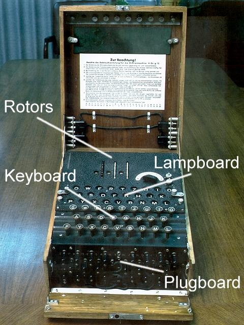
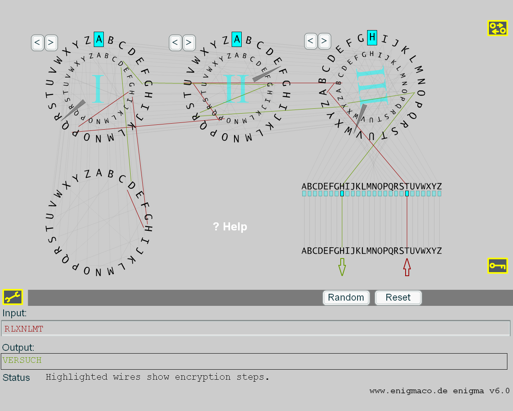

The Enigma was a cipher machine, used in big numbers in World War 2 to encrypt and decrypt messages of the German army. Over the years there were many variants: Mostly widespread was the standard Enigma machine "Enigma I", which was applied by the Wehrmacht from 1930.
Historically the Enigma and its decipherment were very important: Polish and British cryptanalysts deciphered it, which critically influenced the course of war for the benefit of the allies. The project Ultra, which performed the decipherment, had the utmost secrecy; and probably never than then was put more effort in the cracking of a single encryption system. By the end of World War 2, Bletchley Park employed 10,000 people working round the clock shifts.
By 1945 almost all German Enigma messages from Wehrmacht, Kriegsmarine, Luftwaffe, Abwehr, SS, etc. could be decrypted within a day or two, yet the Germans remained confident of its security.
The visualization of Frank Spiess simulates the standard Enigma machine with 3 rotors of the German Wehrmacht.
This visualization shows for each entered cleartext letter, which way led to the appropriate ciphertext letter by the given circuits.
For further links please see literature about Enigma or Wikipedia:
http://de.wikipedia.org/wiki/Enigma_(Maschine)
http://en.wikipedia.org/wiki/Enigma_mchine
Remark 1: Components of the Enigma and the According Parts in the Visualization Mask
The Enigma consisted of an entry unit (keyboard) and of an output unit (lamps which showed the ciphertext letter / lampboard). They only could handle the 26 letters of the alphabet, and only letter by letter.
Between input and output unit there were 5 components, which did the enciphering:
The wiring (permutation) of the alphabet in reflector and each rotor was fixed. At the beginning the rotors were not known to the allies.
The wiring of the plugboard could be changed dynamically (with up to 13 connections to swap).
Furthermore there were 5 rotors (each with a fixed, but different alphabet permutation), from which any 3 had to be chosen.
The following picture shows a sample text to be decrypted.
So the key consisted of the following set, which was published in code books:
Remark 2: Number of Keys
If the wiring is secret, the total number of possible configurations has been calculated to be around 10^114 (approximately 380 bits); with known wiring and other operational constraints (e.g. A was never moved to A), this is reduced to around 10^23 (76 bits).
Users of Enigma then were confident of its security because of the large number of possibilities (they believed that it was unfeasible for an adversary to try every possible configuration in a brute-force attack).